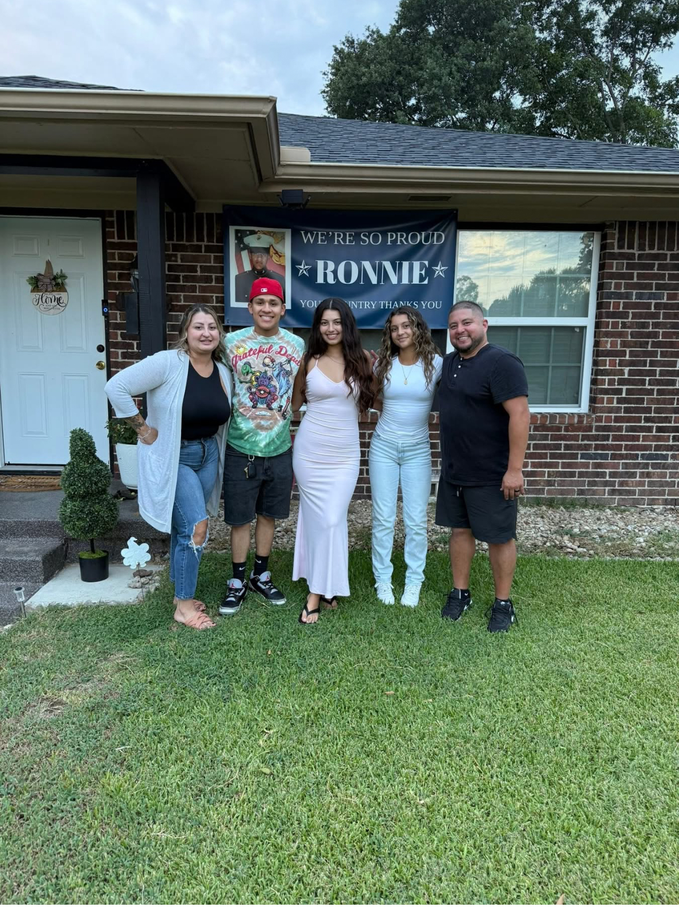

Financial Advisor
Annalisse was a stay-at-home wife looking for something remote when Tony saw she'd be a great fit for his team. She wanted to help people with this kind of planning because it isn't a topic taught to everyone — and she believes every family should have the opportunity to build generational wealth and plan for future success. As a military spouse herself, she brings a personal understanding of what military families need.
Annalisse enjoys helping young families just starting out, especially when it comes to setting up their children's future success. She feels a particular pull toward young military families and veterans.
Annalisse is married to a Marine. Outside of work, she loves the beach, playing volleyball, bowling, and spending time with her family. She describes herself as a super bubbly and energetic person.
